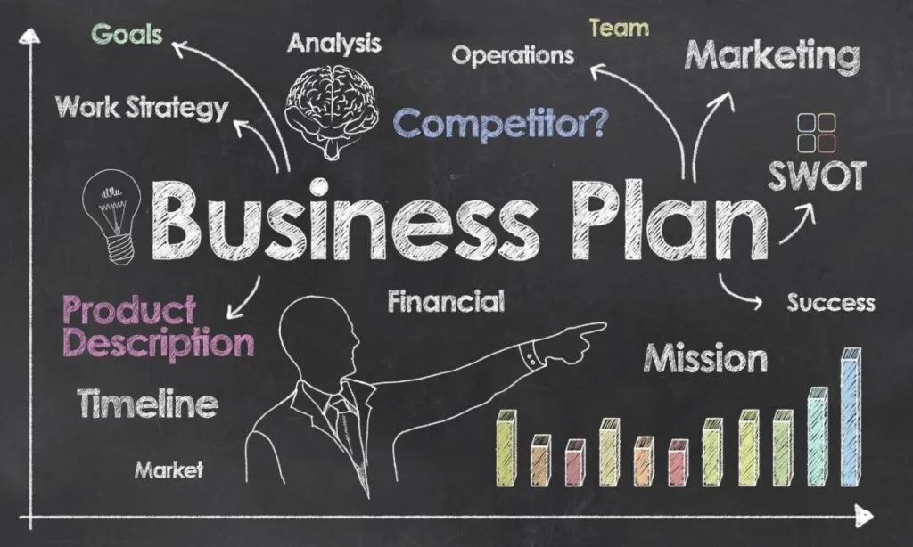
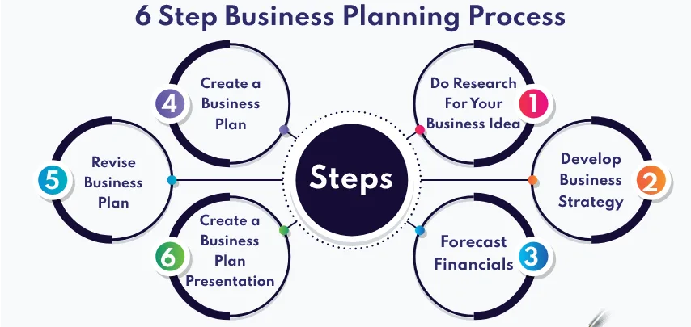
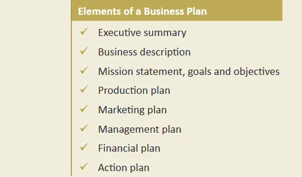
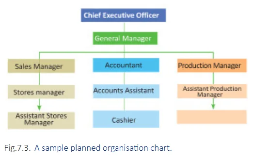
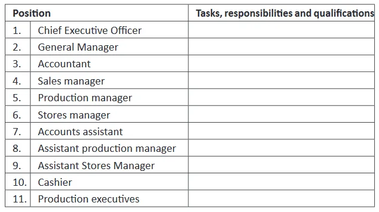
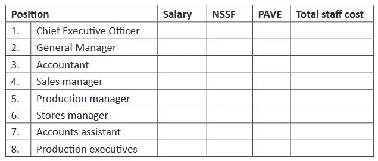
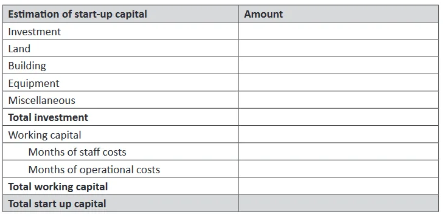
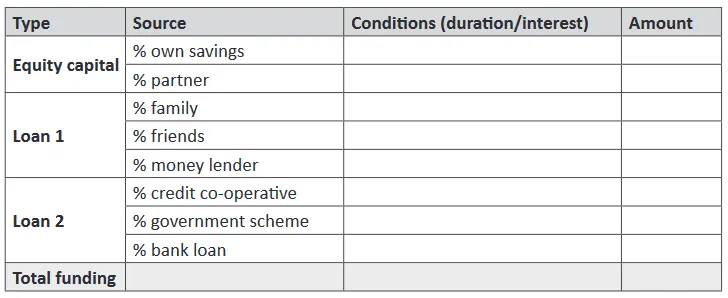

Expanded Nursing Uganda Explanation
Business planning should be understood beyond a short definition. Link the concept to patient history, focused assessment, common risks, nursing priorities, documentation and evaluation of outcomes.
01 BUSINESS PLANNING
When one has identified a business Opportunity to execute, one is not advised to immediately execute the businesses, a thorough process of planning for how the business will be done (Process of Production/Operation), where will it be done from (Location), to whom will it be done for (Customers), who will do it (workers) when will it be done (Commencement) among others.
At idea generation and idea assessment, you only answer one question of the business problem which is (Which business to do) but the rest of the questions listed above can only be answered in the business planning process which is later compiled in a business plan.
02 Business Plan
A business plan is a written document that summarizes the operational and financial objectives of a business and contains the detailed plans and budget showing how the objectives are to be realized.
It shows why the business was formed, where it is going, what to be done and how it should be handled or managed among other things
03 Reasons for writing a Business Plan(Objectives, Aims or Purpose)
1. It’s a guiding tool for the running of the business . A business plan is a roadmap for your business. It outlines your goals, strategies, and how you plan to achieve them. It helps you stay on track and make informed decisions about your business.
2. It is a document of reference whenever they need to seek direction after losing track of business. A business plan can help you get back on track if you lose sight of your goals. It can remind you of your original vision for the business and help you develop new strategies to achieve your goals.
3. A business plan is also used to seek funding for business. Some banks and possible granting organizations ask for a business plan. A business plan is essential if you are seeking funding for your business. It shows lenders and investors that you have a well-thought-out plan for your business and that you are a good risk.
4. It acts as a time table for business implementation . A business plan can help you develop a timetable for implementing your business goals. It can help you identify the steps you need to take and the resources you need to achieve your goals.
5. A business plan is a very helpful tool in monitoring, evaluating and controlling business operations . A business plan can help you monitor, evaluate, and control your business operations. It can help you identify areas where you are succeeding and areas where you need to improve.
6. To convince oneself that the new business is worthwhile before making a significant financial and personal commitment. Writing a business plan can help you assess the feasibility of your business idea. It can help you identify potential risks and challenges and develop strategies to overcome them.
7. To assist management in goal-setting and long-range planning . A business plan can help management set goals and develop long-range plans for the business. It can help management identify the resources and strategies needed to achieve the goals.
8. To monitor the performance of the business overtime . A business plan can help management monitor the performance of the business over time. It can help management identify trends and patterns and make adjustments to the business plan as needed.
9. In order to calculate and pay the exact amount of tax to the government . A business plan can help you calculate the amount of tax you owe to the government. It can help you identify the deductions and credits you are eligible for and make sure you are paying the correct amount of tax.
10. To develop a timetable for implementation of various business activities in a sequenced way . A business plan can help you develop a timetable for implementing various business activities in a sequenced way. It can help you identify the dependencies between different activities and make sure that the activities are completed in the correct order.
11. To attract investors and get financing . A business plan can help you attract investors and get financing for your business. It can show investors that you have a well-thought-out plan for your business and that you are a good risk.
12. To explain the business to other companies with which it would be useful to create an alliance or contract . A business plan can help you explain your business to other companies with which it would be useful to create an alliance or contract. It can help you identify the benefits of working with your business and make it easier to negotiate a deal.
13. To attract employees . A business plan can help you attract employees by showing them that you have a well-thought-out plan for the business and that you are a good employer. It can also help you identify the skills and experience you need in employees and make it easier to find the right people for your business.
14. Control future risks. A business plan can help you identify and control future risks to your business. It can help you develop strategies to mitigate risks and make it more likely that your business will be successful.
15. Prepare for future uncertainty . A business plan can help you prepare for future uncertainty by identifying potential risks and challenges and developing strategies to overcome them. It can also help you develop a contingency plan in case of unexpected events.
16. Control business environment . A business plan can help you control the business environment by identifying factors that could affect your business and developing strategies to mitigate the impact of these factors. It can also help you develop relationships with key stakeholders who can help you control the business environment.
17. Control business growth . A business plan can help you control the growth of your business by identifying the resources and strategies you need to achieve your growth goals. It can also help you avoid overextending yourself and make sure that your business grows at a sustainable pace.
18. Avoid sales crises . A business plan can help you avoid sales crises by identifying potential sales challenges and developing strategies to overcome them. It can also help you develop a sales plan that will help you achieve your sales goals.
19. Ensure work space is available. A business plan can help you ensure work space available by identifying the space you need and developing a plan for acquiring or developing the space. It can also help you create a work environment that is conducive to productivity and makes it easier for employees to do their jobs.
20. Avoid stock buying crises . A business plan can help you avoid stock buying crises by identifying potential stock shortages and developing strategies to overcome them. It can also help you develop a stock management plan that will help you manage your inventory and avoid stock shortages.
21. To test the feasibility of the business idea . Writing a business plan enables the entrepreneur to establish whether or not an idea for starting a business is feasible other than going out and doing it.
22. To give the business the best possible chance of success. Business planning encourages the entrepreneur to pay attention to both the broad operational and financial objectives of his new business and the details such as budgeting and marketing planning.
04 IMPORTANCE OF PREPARING A BUSINESS PLAN
- It helps in adequate preparation for the business; it encourages an entrepreneur to think through his business thoroughly in order to prepare for identified sensitive areas which will need more attention.
- It helps an entrepreneur in defining specific goals and objectives which serves as a benchmark to measure the progress of the business in implementing the plan.
- It facilitates business monitoring based on the set goals and objectives as a standard of measurement such that any deviation from the set plans can be detected from and corrected in time.
- It encourages an entrepreneur to be and remain focused by thinking about the business he/she is in now and the business he wants to have in future.
- It acts as a time table for implementing business activities in a logical manner.
- A business plan helps an entrepreneur in accessing financial assistance from the , it is through the business plan that lenders will determine whether to fund the project or not and how much it will inject in.
- It eases the work of an entrepreneur as his employees will use it to know the business objectives or targets in terms of production, profitability, it will also clearly state their duties and responsibilities plus their related remuneration.
- It facilitates easy decision making as it clearly spells out the expected cash inflows and outflows of the designed business.
- It shows the feasibility and viability of the business thereby enabling an entrepreneur to determine whether to carry on with the opportunity or try other business alternatives.
- Enables the government and local tax authority to determine the tax revenue to be paid by the business and likely effects of the business to the environment.
05 Steps in Preparing a Business Plan
1. Select a Business Type: Choose the type of business you want to engage in, such as trading, manufacturing, agribusiness, service business, or any other suitable option. Consider your skills, interests, and market opportunities.
2. Conduct Market Survey : Conduct thorough market research to assess the demand for your chosen business type. Analyze customer needs, preferences, and buying habits. Identify your target market and understand their demographics, psychographics, and pain points.
3. Gather Other Relevant Data : Collect data related to your chosen business type, including:
- Cost of equipment and machinery
- Environmental protection regulations
- Raw material requirements
- Selling and administrative expenses
- Zoning laws and regulations
4. Draft a Business Plan : Create a comprehensive business plan that outlines your business concept, target market, products or services, marketing and sales strategies, operational plan, management team, and financial projections. ****
6. Create a Business Plan for Implementation : Develop a detailed action plan that outlines the steps you need to take to implement your business plan. Include timelines, milestones, and responsibilities for each task.
06 Components / Elements of a business plan
A good business plan must be complete, meaning that it should cover all the major aspects of a business and must be based on complete and accurate data. It should cover the following;
- Title Page
- Executive Summary
- General description of a business
- Statement of mission, goals and objectives
- Production plan
- Marketing plan
- Organization plan
- Financial pan
- Action
An executive summary is a brief overview of the entire business plan in one or two pages . It is the basis upon which people decide to pursue your idea or not. It is written last because it is a summary of all the other sections. This means that you pick the most important parts of all the other sections to make the executive summary.
The executive summary highlights the following:
- A brief description of the business. What will your product be?
- Description of the market in terms of size and growth potential. Who will your customers be?
- Marketing strategies.
- Key personnel in the business. Who are the owners?
- Key strength and opportunities of the business.
- Historical and forecasted financial data like profits, revenues, and so on.
- Funds required for the business and how the required funds will be used.
- What investors will get from the business.
Please note that the Executive Summary is The “hook” of your business plan. This section concisely explains your product, the market size and need, and the company’s unique qualifications to fill those needs. The best executive summaries quickly make busy investors want to read the rest of the plan. It must be enthusiastic, professional, complete, and concise.
If applying for a loan, state clearly how much you want, precisely how you are going to use it, and how the money will make your business more profitable, thereby ensuring repayment.
This section helps the reader to get a general view and understanding of the nature of business you are planning to operate.
This section summarizes the following: ****
- Name of the business.
- Location of the business.
- Contact address of the business (telephone, email, fax, and so on).
- Legal form of the business.
- Services/goods to be supplied or produced (needs of the market it will seek to fulfill).
- Uniqueness of the business from existing businesses. What makes the business different from the others?
- SWOT analysis of the business
- Strengths of the business (advantages your business has over other businesses).
- Weaknesses of the business (limitations of your business in relation to its competitors).
- Opportunities of the business (benefits to the business outside its operations)
- Threats to the business (negatives to the business outside its operations).
a. Vision: Vision is where you see yourself in a specified period of time. What will your business become in five years? The vision statement describes a business based on best outcomes.The vision statement should motivate and inspire you to work towards achieving your goal. It should therefore be short and inspirational.
Look at the vision statement below:“
- The number one provider of quality medication to the next generation of Uganda:
b. Mission Statement: A mission statement differs from the vision statement. It explains why your business exists, that is, what it does and what it hopes to achieve in the future.
Look at the mission statement below:
- ‘To provide high quality health services for private and general patients in Uganda.’
c. Goals and Objectives
Goals are the targets that you want the business to achieve in the medium and long term period. The goals must be based on the mission statement of the businesses.
An entrepreneur can develop several goals from his/her mission and also several objectives from each goal. Examples of business goals may include ;
- To increase patient turn up by 40% annually for the next 5 years.
- To maximize profits by 15% annually for the next 5 years.
Production plan is an analysis of the projected needs for manufacturing or producing the proposed products or services.
The production plan describes how production will be carried out in the business, the goods or services that will be produced in the business.
In your production plan, you should show the following:
- Location of the business . Show the intended physical location of the proposed business premises, and reasons to justify the desired location for your business. Do not forget to show a brief status of the cost whether rented, leased or own premises and the costs associated with it.
- Quality control . Describe how quality will be controlled to avoid defects and poor quality products released on the market.
- Brief explanation of the production process and plant layout.
- Equipment and machinery to be used in the business: You should show the type, nature and capacity of equipment and machinery required. Do not forget to indicate the possible sources of these equipment and their cost.
- Production planning. Describe the stages of production from start to finished product.
- The production staff: Describe the kind of staff required in the production process, the skills they should possess, their availability and how much they should be paid.
- The required raw materials and their sources .
- Production utilities required . Describe the utilities the business will require such as electricity, water, telephone and so on. Show their suppliers and costs.
- Required inputs and raw materials . You should show the raw materials your business needs, their sources, amount required, reorder level, costs and how they will be transported to the business premises.
- Quality management. Explain how quality management will be ensured in the production process. Will you employ quality controllers? Will the production process go through quality certification by international certification organizations?
- Packaging . Describe how the products will be packaged, the required technology to package and so on.
- Technical skills required to produce and manage the equipment. Is there a need to hire experts to run the equipment? Do you need to train your staff to be able to use the equipment properly? What costs are involved in retraining workers?
- Training needs and costs: Indicate if you will need to train the workers and the costs involved.
- Labour and safety requirements and how they will be implemented at the production premises.
- Backup plan . Do you have technical backup for your machinery in case of breakdown during the peak production process?
- Expected output . Depending on the machinery and equipment, what is the expected output per period of time? Will this output fully make use of the machinery or will the machines operate at less than full capacity? If the business will be producing different kinds of products, indicate what quantity of each product will be produced.
A marketing plan is a statement of market objectives, strategies and activities to be followed in the business. It will describe the following in detail,
Marketing is everything you do to find out who your customers are and what they need and want, the price they are willing to offer for a service or product .
The marketing plan describes the general marketing strategy of the business.
The marketing plan should be based on correct and researched information. It shows the plans and arrangements made on how to price, promote and distribute the products so as to attract and retain customers. You must do a good market survey to be able to prepare a good marketing plan.
In your marketing plan, you are required to write down:
- Business idea : Businesses in any economic sector are based on an idea. For example, identify needs, who are the customers, type of products or services to satisfy the needs, how to reach the customers and so on).
- Marketing objective : The marketing section should clearly indicate the objectives to be achieved. Specify the specific, measurable, achievable, relevant, and time-bound (SMART) objectives that the marketing plan aims to achieve. For example, to achieve a 10% market share within the first year.
- Market research : Starting from your business idea you must now learn more about your customers and competitors through market research. Conduct thorough market research to gather information about customers, competitors, and the overall market landscape. This can include surveys, interviews, focus groups, and secondary research.
- Target Market : Identify and define the target market for the business. This includes demographics, psychographics, and buying behavior.
- Marketing Mix: Develop a marketing mix that includes the following elements:
- Product : Detailed description of the product or service, including its features, benefits, and unique selling proposition (USP).
- Price : Pricing strategy and the factors that influence pricing decisions, such as cost, competition, and market demand.
- Place : Distribution channels and methods used to make the product or service available to customers.
- Promotion : Advertising, public relations, sales promotion, and other methods used to communicate with customers and create awareness and interest in the product or service.
- Marketing Budget : Allocate a budget for marketing activities, including advertising, promotions, market research, and other expenses.
- Expected sales quantity and expected growth of sales during the year. You can use a graph to show these expected trends.
- Market share of your competitors . Use SWOT analysis to know your strengths, weaknesses, opportunities and threats.
This is an organization around which people, machines, equipment and other physical parts of the plan are put together to have a moving organization.
The organization plan shows how the business will be organized.
An organizational plan contains the following:
- State the legal structure of the business . Whether it will be managed as a partnership or limited liability company.
- State the size and composition of a Board of Directors . Identify the proposed board members and include a short statement about each member’s background. This should show how relevant they are to the business.
- The people in the organization. Present the key management roles in the business and the individuals who will fill each position. State the current or past jobs that the key personnel of the business have worked in before.
- Describe the exact duties and responsibilities of every manager . For each individual, include a brief statement of career highlights that focuses on his or her ability to perform the assigned role.
- Explain how the business will be managed. Use an organization chart to explain the organization structure.
- Which people will supervise or manage other people?
- Tasks and responsibilities of each worker.
- Skills and experience required of each worker.
- Staff costs (salary and any other cost attached to each employee).
- Motivation of workers . State the salary that is to be paid to each employee.
- Management budget. I nclude an outline of the management budget. This should show the category of employees, number, salary or wage per employee per month and the yearly estimate. This depends on the nature of the business because different businesses have different categories of employees.
- If there are external consultants, advisors and helpers, they should be indicated and their payments explained.
- Organizational business premises. The way the business premises will be organized. How offices and workstations will be arranged.
The financial plan is one of the most important sections of a business plan. It shows if the business will make profit, how much profit it will make and when it will make it.
Most users of a business plan are interested in knowing that. The financial plan shows the revenues and expenditures of the business. The financial plan section of the business plan covers all financial necessities and projections of the business. It shows what the business expects to spend (expenditures/ payments) and what it expects to earn (incomes/revenues).
The financial plan should contain the following:
a. Start up budget : Start up capital is the amount of money you need to start your business. You need money for equipment, materials, rent, wages, salaries and so on.
Possible sources of funding include : own savings, partners, family, friends, money lenders, credit co-operatives, government schemes and bank loans.
b. Business operation and costs : To be able to set your prices and make financial plans, you need to calculate the costs of your products or services.
c. Monthly sales plan : You should know the monthly sales of all products, product range or services.
d. Monthly operational cost plan: Planning is based on the monthly sale plan.
e. Cash Flow Statement : The cash flow statement shows how finances come in and out of the business. Using the cash statement, you can project and foresee shortages in time and find solutions so that your business does not get a cash crisis. Under cash flows, we have the cash revenues (incomes/cash in) and cash payments (expenditures/cash out). These are further explained below:
- Cash revenues : This is a list of all of the expected cash in (incomes) for each month in your financial year. Revenues differ from business to business. Take a case of a hospital, revenues may include: treatment of dental payments, children, maternity, surgeries, optical, outpatient departments and so on.
- Cash payments : This is a list of cash out (expenditures) for each month in a financial year. This includes all expenditures the business may encounter such as rent, electricity bills, salaries and wages, professional services and advertising.
For you to get the total cash flows, you get the total cash in (revenue/incomes) and subtract total cash out (payments/expenditures). The balance is your total cash flows.If your total payments are higher than total incomes in other-wards you get a negative number after reconciliation, it means that you don’t have enough cash flow to run the business in that particular month. In other words, your working capital is not adequate. You are receiving less money than you need for your operations. You need more start up capital.
Look at the cash flows of Nurses Revision general hospital.
An action plan is a document that involves designing a series of sequential steps that enables an entrepreneur to meet set targets. It follows a logical and linear approach.
Uses of an action plan:
- It helps the business to remain focused during implementation.
- It helps to locate sources of information and resources needed for the business.
- It acts as a timetable for implementation of a business plan.
- It helps to identify business barriers in advance.
- It helps to obtain information on the progress of the business.
- It helps to identify the strength, weaknesses, opportunities and threats of the business format of an action plan.
Limitations to the successful implementation of the business plan:
- Inconsistencies in business plan preparation.
- Underdeveloped infrastructure/utilities.
- Resistance from competitors in the market when carrying out market surveys.
- In adequate resources such as capital, land, labour land, raw materials etc.
- Natural calamities which hinder movement and supply of the required materials.
- Personal weaknesses of the entrepreneurs
- Preparation of unfeasible/ unrealistic action plans which are difficult to implement.
- Failure to involve stakeholders in business plan preparation
- Threats like executive competition in the target area of the plan.
When implementing a business plan, you undertake different activities each taking a defined time. For you to properly control and monitor the sequence of all these activities, you need to use a Gantt chart.
A Gantt chart shows all planned activities and their expected time span. For example, a new publishing firm to be set up:
- Activity A, buying of premises and equipment done from January to June.
- Activity B advertising and recruitment of staff taking place from June to August.
- Activity C development of reading materials taking place from September to November.
- Activity D printing of reading materials taking place from October to December.
- Activity E distribution of reading materials to different schools, taking place from December to February of 2018.
On the Gantt chart, activities should be presented in a logical order, that is, the first activity presented first. For example, buying of premises should come first before advertising and recruitment of employees because the time for buying of premises is before that of recruitment.
Activities that use the same resources or done by the same people should not be planned to be done at the same time. For example, if a business uses designers to develop reading materials and at the same time printing, then printing should not be planned to occur at the same time with development of reading materials because they both require designers. Some activities can be carried out at the same time. This is possible if the activities do not need the same resources or are not supervised by the same man power.
07 Common Mistakes in Preparing a Business Plan:
Many entrepreneurs make mistakes when preparing a business plan, which can lead to losing out on funding or business plan competitions.
Here are some of the most common mistakes to avoid:
1. Being Unrealistic with Financial Projections: Avoid making overly optimistic or unrealistic financial projections. Lenders and investors will be skeptical of a business plan that promises unrealistic profits or growth. Be realistic and conservative in your financial projections, and make sure they are based on sound research and analysis.
2. Not Defining the Target Audience or Customers : Clearly define your target audience or customers. Who are they? What are their needs and wants? What are their buying habits? Without a clear understanding of your target market, it will be difficult to develop effective marketing and sales strategies.
3. Hiding Your Weaknesses and Exaggerating Your Strengths : Be honest about your business’s weaknesses and challenges. Investors and lenders want to see that you are aware of the risks and challenges involved in your business and that you have a plan to address them. Don’t try to hide your weaknesses or exaggerate your strengths.
4. Quoting Wrong Statistical Figures Based on Bad Research: Make sure the statistical figures and data you include in your business plan are accurate and reliable. Conduct thorough market research to gather relevant data and statistics. Using incorrect or outdated information can undermine the credibility of your business plan.
5. Not Focusing on the Current and Future Competition : Analyze your competition thoroughly. Identify your direct and indirect competitors, and assess their strengths, weaknesses, and market share. Understand how your business will compete in the market and what strategies you will use to gain a competitive advantage.
6. Not Knowing the Distribution Channel : Clearly define the distribution channels you will use to reach your target customers. Will you sell your products or services online, through retail stores, or through distributors? Make sure you have a clear understanding of the distribution channels available and how you will use them to reach your customers effectively.
7. Including Too Much and Uncalled-for Information and Leaving Out the Most Relevant: Keep your business plan concise and focused. Avoid including unnecessary or irrelevant information. Focus on the most important aspects of your business, such as your business idea, target market, marketing and sales strategies, and financial projections.
8. Being Inconsistent, Especially When It Comes to Financial Plans Against the Other Plans with Financial Implications : Ensure consistency throughout your business plan, especially when it comes to financial plans and other plans with financial implications. Make sure the financial projections are aligned with the marketing and sales strategies, and that the overall plan is financially feasible.
9. One Writer, One Reader : Don’t rely on just one person to write and review your business plan. Get feedback from multiple people, including potential investors, lenders, and business advisors. This will help you identify any weaknesses or areas that need improvement in your business plan.
08 Nursing Uganda Clinical Lens
Use Business planning as a practical nursing topic, not only a memorized definition. Translate theory into safe decisions, accountability, communication and service improvement.
- What to understand first: define business planning, identify the normal or expected pattern, then explain what changes when the patient is unwell.
- Why it matters in care: the nurse must recognize risk early, explain findings clearly, document accurately and know when to escalate.
- How to revise it: connect each point to assessment, nursing diagnosis or care problem, intervention, rationale and evaluation.
09 Assessment Guide
- The problem, stakeholders, available resources, policy requirements and ethical issues.
- Risks to patients, staff, confidentiality, quality, costs and continuity.
- Documentation, reporting lines, supervision and evaluation measures.
10 Nursing Priorities, Rationales and Outcomes
- Use evidence, policy and professional standards to guide action.
- Communicate clearly, document decisions and protect confidentiality.
- Evaluate whether the action improves safety, learning or service delivery.
The rationale for these priorities is patient safety: nursing actions should prevent deterioration, reduce discomfort, support recovery and create clear evidence for the next caregiver.
- Expected outcome: The plan is documented, realistic, ethical and improves patient care or learning outcomes.
11 Patient Teaching and Revision Check
- Explain business planning in simple language the patient or caregiver can repeat back.
- Teach warning signs, medicine or follow-up instructions, hygiene or lifestyle points where relevant.
- For exams, prepare a short answer using: definition, causes or risk factors, signs, assessment, management, complications and prevention.
- For ward practice, document baseline findings, actions taken, patient response and the plan for review.
Illustrations and Diagrams (13)








5 more diagrams available, open the lesson for full illustrations.
Related Video Lectures
Watch nursing lecture videos on YouTube for this topic. Opens in a new tab.
Watch on YouTubeExternal link: YouTube may use its own cookies and terms. Nursing Uganda is not affiliated with YouTube.